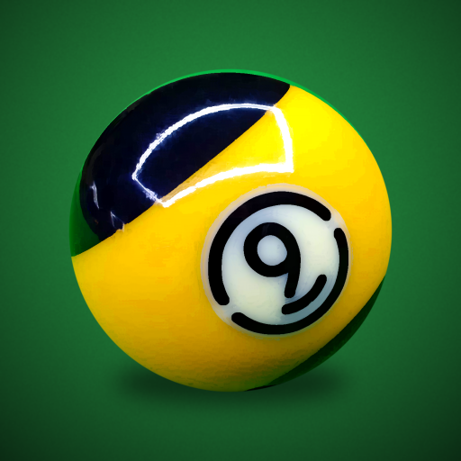
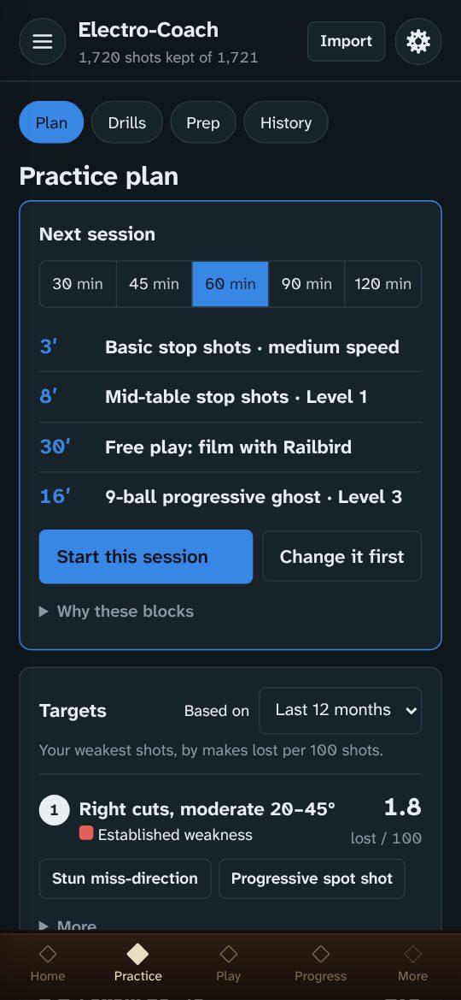
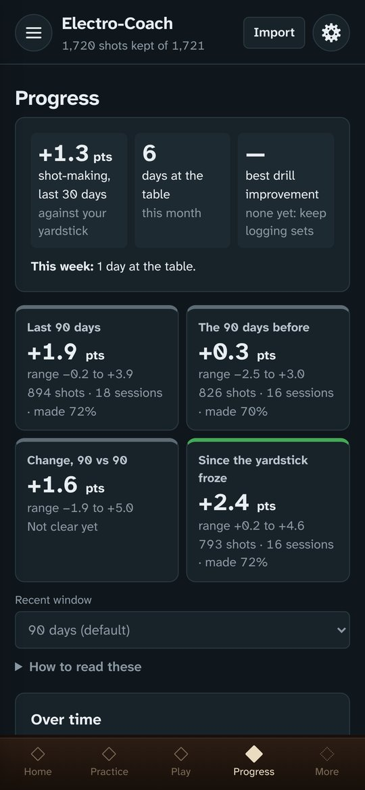
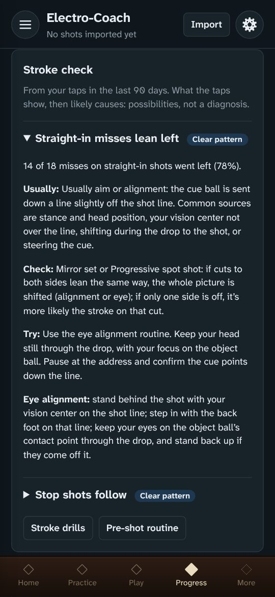
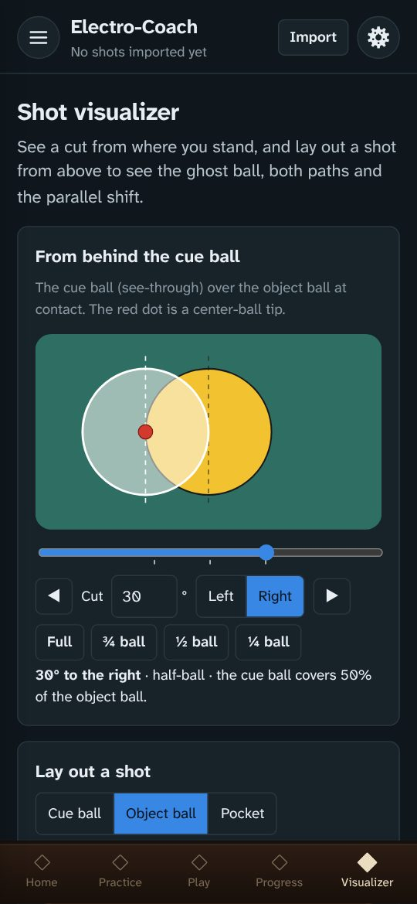
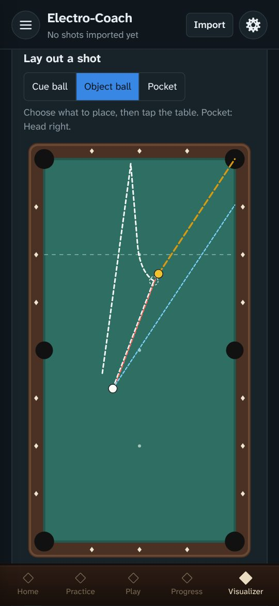
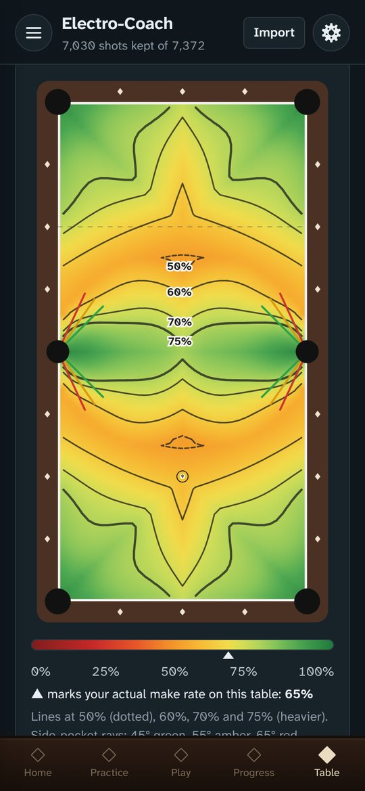
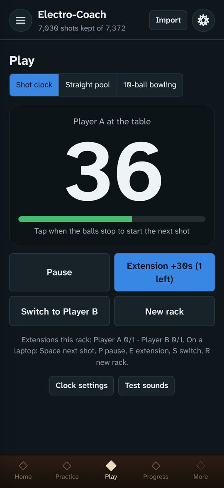
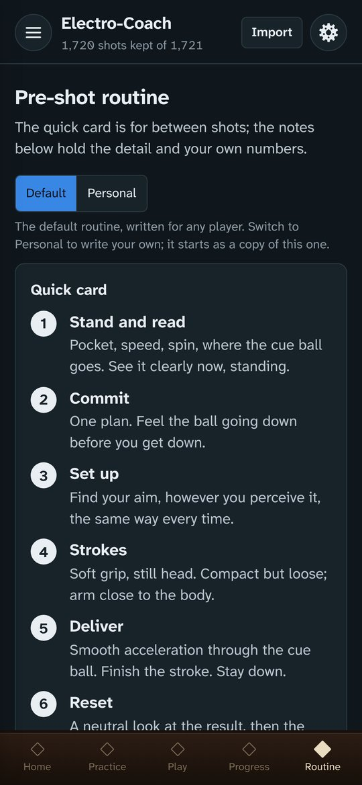
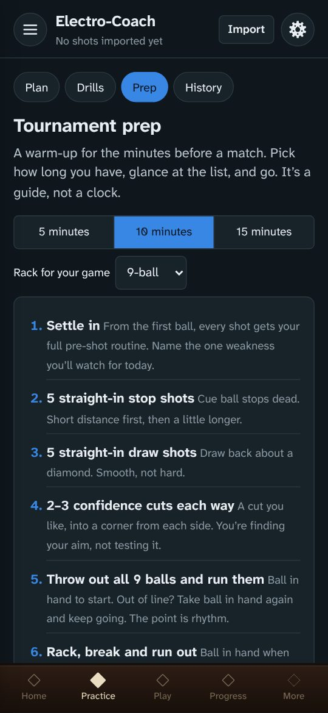

Why I built it
I love pool, and I built Electro-Coach to help me get better. I’m a scientist with a background in statistics, and it started as an analysis of my own Railbird data. I wanted to understand my strengths and weaknesses well enough to know what to practice. The numbers here are built the way I’d build them in my own work. Every shot is measured against its difficulty, and every result comes with a range that says how sure it is.
From there it grew into a structured practice plan that keeps me honest, with no shortcuts. And the more I use the app, the more it builds on the valuable data I already get from Railbird.
I added other things I like to have on hand, too: my pre-shot routine and a journal for practice sessions and competition days.
This is a labor of love and still a work in progress. I hope it helps you too.
— Lela
What it does
Everything works on its own. With Railbird shot data, the analysis and the practice plan come alive.
A plan for every session
A warm-up, a stroke drill, a drill aimed at the shots that cost you the most, and a progressive ghost to finish. Block timers learn how long your drills really take you.
Drills you log with a tap
Stroke drills, cue ball control, position patterns and run-outs, each with a diagram and tip positions for the cue ball. A tap takes a second, so you log what matters without leaving the table or breaking your rhythm. Levels move up and down from your results.
Progressive ghost
Run-out practice for 8- or 9-ball, at your pace. Run a quick rack or keep going for hours, collecting data on how you play. The app tracks your break, where racks end, and how often the money ball is the miss. A separate run-out drill for 10-ball (10-ball bowling) is also provided.
Progress you can trust
Your recent play measured against a frozen yardstick of your own shot-making, so real improvement shows instead of getting lost in the mix of shots you happened to take.
Strengths, weaknesses and heat maps
How often you make each kind of shot against how often you should, a shot predictor, your best speeds, and heat maps of where you pot best on the table.
Your pre-shot routine
Written your way and always one tap away, with a home-screen widget on Android. Fully editable.
Match tools
A tournament-style shot clock with extensions, straight pool scoring, and your FargoRate tracked over time.
Tournament prep
A 5, 10 or 15-minute warm-up for the minutes before a match, adjusted to your game. Edit it to make it yours.
Journal
Notes on practice, equipment and competition days, lined up with your numbers, and easy to share with a coach.
Stroke check
Your drill taps add up. When misses lean one way, stop shots roll forward, draw dies at the rail or cuts run thick on one side, the Stroke check shows the pattern, how sure it is, likely causes, what to check and a drill to try. It also tells you whether a change to your stroke or equipment helped.
Shot visualizer
See a cut the way you see it from behind the cue ball: full, ¾, ½ and ¼ ball, at any angle. Or lay out a shot from above to see the ghost ball, the contact point, both ball paths and the parallel shift.
A look inside









Better with Railbird and poolbilliards.co
Railbird films your play and measures every shot. Electro-Coach works without it, but it’s at its best with it: your Railbird data powers the progress tracking, the practice plan, the heat maps and the speed profile. If you’re serious about getting better, a Railbird subscription is well worth it. And poolbilliards.co is one of the richest drill libraries there is: subscribe, find drills you enjoy, and work them into your practice.
Railbird is a companion, not a chore
- Film free play. Solo play gives the widest mix of shots, the ones you actually face. Then watch the recording for one thing in your mechanics to work on.
- Film a drill now and then to fill gaps. Copy the drill’s Electro-Coach tag and add it as a tag on the Railbird session, so Electro-Coach knows which drill the shots belong to.
- Film as often as you can, especially at first. The more you record in your first weeks with Railbird, the sooner your numbers come into focus. If one or two 20–30 minute recordings a week is what fits, that’s fine: the picture just sharpens a little more slowly.
- One device is all you need. Film with Railbird in some sessions and tap drills in others. If you have a second phone or tablet, it can film while you tap on your main device, so you collect video and taps at the same time.
Links
A recommendation from a player who uses both. Electro-Coach isn’t affiliated with either.
Get the app
Each device keeps its own data. Move it between devices with Settings → Back up and Restore, and back up now and then.
Android
- On your phone, tap the button below. It downloads electro-coach.apk.
- Open it and tap Install. Android asks once to allow installs from your browser or Files app.
- From then on the app updates itself: when a new version is out it offers Update now. Updates keep your data; don’t uninstall to update.
If the first install gets stuck
- The browser warns the file might be harmful. Apps from outside the Play Store always get this warning. Choose to download or keep it anyway.
- The download finished but tapping it does nothing. Open your Files app (or Downloads), find electro-coach.apk and tap it there.
- Play Protect doesn’t recognize the developer. That’s because the app isn’t in the Play Store. Choose More details → Install anyway.
- “App not installed”. Usually not enough free space. Don’t uninstall a working copy unless you’ve backed up: uninstalling erases the app’s data.
iPhone
- On your iPhone, tap Install on iPhone below.
- The app shows you how to add it to your Home Screen, step by step. It takes a minute. In DuckDuckGo or another browser that can’t do it, you’ll use Safari for that one step.
- Open Electro-Coach from its new icon: your setup starts there. It runs full screen, works offline once loaded, and your data stays on the phone.
You keep using your usual browser for everything else.
The end of a timed practice block sounds only while the app is on screen: iPhone web apps can’t schedule alerts in the background. FargoRate search works in the Android app; on the web, enter your rating by hand.
Computer
- Open the web app in Chrome, Edge or Safari.
- Or download the single-file version and open it from your computer, no internet needed.
Your data stays yours
There’s no account. Everything you enter stays on your device, and backups are files you keep. Anonymous usage counts come with the free version (they’ll be optional in the paid version), never include anything you enter, and are never sold.
Feedback and support
Problems, ideas and drill requests all shape what comes next: use Feedback and drill requests in the app, or email feedback@electro-coach.com.